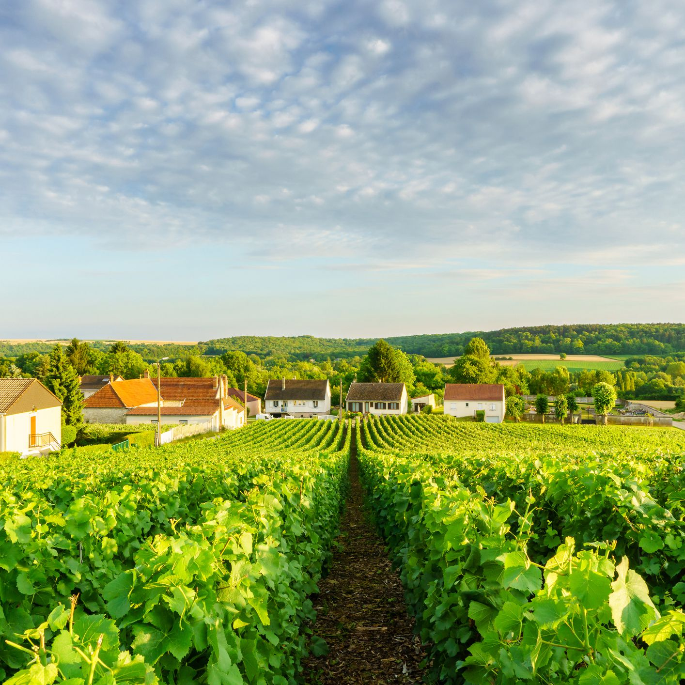

帝堡香槟
乐特酒庄
故事始于二十世纪初期，那时年轻的勒内。施洛耶歇（Rene Schloesser）离开了家乡卢森堡来到了香槟地区，邂逅了露西，古特拉斯（Lucie Coutelas），并于1927年喜结连理。1929年创立了今天的酒庄。目前出口到5大洲，在超过35个国家可以喝到帝堡香槟。
家族葡萄园主要位于罗默里（Romery），科尔穆瓦厄（Cormoyeux）及弗勒里拉里维耶（Fleury la Rivere）地区背靠兰斯山脉，山坡坐北朝南及东南，再加上石灰质粘土土壤，可以种植出完美的莫尼耶和令人惊喜的霞多丽。在位于马恩河谷，以黑皮诺闻名的特级村庄阿伊（Ay）我们也种植葡萄。帝堡酒庄（La Maison TRIBAUT-SCHLOESSER）将传统与先进技术结合，致力于提取葡萄精髓。
葡萄压榨车间和酿造车间严格遵守质量标准。7个大桶和20多个小桶用以陈年葡萄酒，它们体现了帝堡风格，这种风格融入在传承了四代的家族传统中
